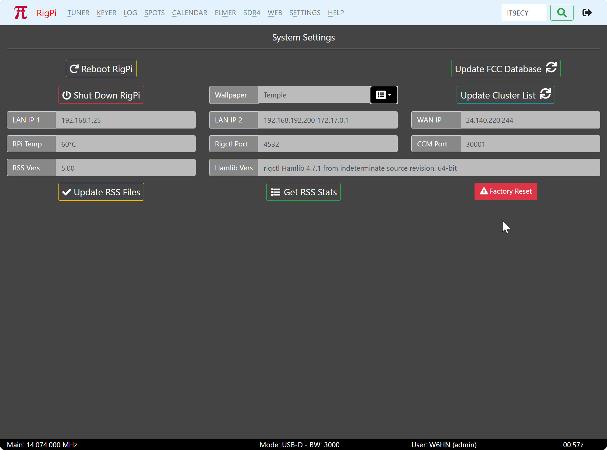

|
<< Click to Display Table of Contents >> Navigation: Settings > System |

System Settings provides information about system aspects of RSS and buttons to reboot RigPi or shut it down. System Settings is only available for Access Level 1 accounts.
Restarts RigPi. Any active user accounts must be restarted along with connecting radios after rebooting.
Use the Shut Down button before disconnecting power to RigPi. Wait for the green activity light to stop blinking before proceeding. Not doing so could damage the RigPi memory card.
Refreshes the FCC callsign lookup database loaded on RigPi. The refresh process takes about 15 minutes to complete. Note the entire FCC database is updated by the FCC once per week.
Updates the DX cluster database from the public cluster directory at dxcluster.info. The database contains over 900 DX cluster nodes worldwide, including host addresses, ports, and locations.
The update fetches the current list and adds any new nodes while updating existing entries. The result shows the number of new nodes added, nodes matched and updated, and the total node count. The cluster list is used by RigPi to connect to DX spotting networks.
Note: An internet connection is required. The update typically completes in a few seconds.
RSS can connect to the Internet through Ethernet and/or Wi-Fi. If only Ethernet or Wi-Fi is used, LAN IP 1 is the IP address for that connection. Use LAN IP 1 for the LAN IP if you are setting up port forwarding in your Internet router.
If RSS is connected to the Internet through an Ethernet connection and through Wi-Fi, the Ethernet connection is shown in LAN IP 1 and the Wi-Fi address is shown in LAN IP 2.
WAN IP is the public IP of your connection to the Internet. This is the IP you can use to connect to RSS when away from home. You must set up port forwarding in your router for RSS and Mumble to operate remotely. See also Cloudflare Tunnel for remote access without port forwarding.
Shows the temperature of the CPU chip on the Raspberry Pi. The core temperature goes up as the Raspberry Pi gets more heavily loaded. The maximum operating temperature is rated for 80°C. If the temperature goes above 85°C, the CPU is throttled. Normally you will see the temperature under 50°C. The Raspberry Pi official case and the K1EL RigPi case has a fan that will keep the CPU cool.
The port used to control the radio for the current account. Use this port number if connecting to another application (such as Fldigi) and you want to have both RSS and the other application control the radio. You can also use this number to connect a second (or more) accounts to the current radio. Enter the port number in the Port field in Basic or Advanced Radio settings.
The port used to connect CommCat Mobile or CommCat to RSS to control the current radio. (CommCat is no longer available.)
The current RSS version number.
The current Hamlib version (rig and rotor control library) installed in RSS.
Update the RSS files to the most recent version. The update is a two-step process. The first step checks version numbers. If the version check shows an update is available, the second step installs the files from the RigPi web site. See Update RSS Files in Other Programs.
Provides a brief summary of RSS Statistics, including time since last reboot, number of connected users, and system loading.
Factory Reset
Resets RigPi to factory default settings. This operation performs the following steps:
1.Creates a timestamped backup ZIP file of all current settings and files
2.Cleans up temporary and development files from the SDR directory
3.Resets the station database to factory defaults
4.Resets all user passwords to factory defaults:
oadmin — 7388
oguest1 — 7389
oguest2 — 7390
oguest3 — 7391
5.Clears SDR user settings and saved configurations
6.Clears system logs and temporary files
Warning: Factory Reset clears all user settings, band memories, and saved configurations. A backup is created automatically before the reset, but verify the backup before proceeding. Acount credentials (QRZ, Cloudflare, Pushover, Gmail) must be re-entered after a factory reset.
Note: The backup ZIP file is saved to /home/pi/ with a timestamped filename. It can be downloaded if needed for recovery.